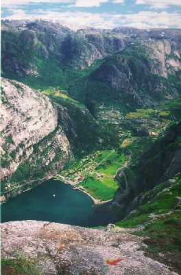
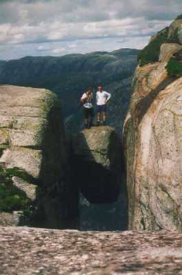

| Home | Kontakt | Steckbrief |
| Wandern/Trekking |
| Klettern/Klettersteige |
| Kanu |
| Fahrradtouren |
|
| Rucksack-Reisen |
| Touren mit Kindern |
| Wissenswertes |
Reisebericht über eine Tour durch Schweden und Norwegen
27.06.99Kilometerstand 124238 in Duisburg. Es geht los. Ich bin ein wenig nervös, da ich meiner Karre ein so lange Strecke lange nicht mehr zugemutet habe. Der Auspuff sah bei der letzten Kontrolle nicht mehr allzu stabil aus und auch die Radlager machen mehr Geräusche als nötig. Ich bin spät nachmittags losgefahren, da es heute nur bis nach Hamburg gehen sollte. Bei Globetrotter Ausrüstung wollte ich mich am nächsten Tag noch mit einigen Ausrüstungsgegenständen eindecken. Vor den Toren der Stadt hab ich dann abends mein Zelt auf einer Wiese in der Nähe einer Kleingartensiedlung aufgebaut.28.06.99Nach einem ausgiebigen Frühstück nach Hamburg reingefahren. Bei Globetrotter unter anderem ein Antimückenmittel namens Dschungel Deo gekauft, dass ich in Schweden mal testen wollte. Man hört ja reine Horrorstories über die skandinavischen Blutsauger. Autan hatte ich schon im Gepäck. Nach dem üblichen innerstädtischen Stau geht es dann auf der A7 Richtung Norden. In Flensburg habe ich dann das letzte mal den Tank mit billigem deutschem Benzin gefüllt. Es folgte ein sehr eintöniges Stück durch Dänemark. Zudem regnet es die ganze Strecke von Flensburg bis nach Frederikshaven. Eine kurze Regenpause habe ich dann auch direkt genutzt, um mir an einem Rastplatz etwas warmes zu Essen und Tee zu kochen. Dabei habe ich dann auch direkt Bekanntschaft mit dänischen Mücken gemacht. Die Viecher sind riesengroß und hinterlassen ebensolche Beulen. Um 18 Uhr komm ich in Frederikshaven an. Eigentlich zu früh, da meine Fähre erst für 4 Uhr gebucht ist. Ich buche vor Ort das Ticket auf die 23:55 Uhr Fähre, die in der gleichen Preiskategorie liegt, um. Auf einem kleinen Parkplatz vor dem Check-In lege ich mich so gut es eben geht im Auto zum Schlafen. Der Tacho zeigte 125242km an.29.06.99Die Fährpassage nach Göteborg dauert 3 Stunden und ist ziemlich unspektakulär. Nachdem alle Autos verstaut waren ging es auf ein höher gelegenes Deck wo man schlafen, an Automaten spielen oder zollfrei einkaufen kann. Leider schafft es ein Automatenspieler mehrere Schläfer wach zu halten. Als wir gegen 3 Uhr in Göteborg anlegen bin ich totmüde. Der Zoll nerfte auch noch ein wenig, da ich mit meiner kleinen Karre unter all den Wohnmobilen wahrscheinlich doch aufgefallen bin. Nachdem ich erklärt habe, was ich vorhabe, durfte ich dann aber doch weiterfahren.Typische schwedische Landschaft nahe Göteborg. Bäume, Seen und Felsen. Ich bin direkt Richtung Stockholm aus Göteborg herausgefahren und habe mich in einem ruhigen Feldweg hingestellt, um noch ein paar Stunden zu schlafen. Ich habe nicht lange geschlafen, da es im Auto zu warm wurde. Ein kleines Stück bin ich in Richtung Stockholm gefahren und habe nachmittags auf einer ruhigen Lichtung das Zelt aufgebaut. 30.06.99Endlich mal wieder richtig ausgeschlafen. Um acht Uhr morgens das Zelt eingepackt. Leider gab es an diesem schönen Platz viele Fliegen, die sich auch alle fuer mich interessierten. Ich brauch wohl mal wieder eine Dusche. Mittags bin ich an Jonköpping vorbeigekommen. Dort habe ich mir erst einmal schwedische Kronen besorgt. Direkt vor Stockholm befindet sich der gut gelegene Campingplatz Bredangs Camping (Stora Sällskapets Väg, 12731 Skärholmen, Tel: 08-977071) auf dem ich die Nacht verbringe. Der Platz liegt deswegen so günstig, da sich Stockholm von dort schnell per S-Bahn erreichen lässt. Leider ist er auch entsprechend teuer. In Schweden benötigt man eine Campingkarte, die mit 15,-DM zu Buche schlägt und die eigentliche Platzgebühr betraegt 37,-DM. Nachmittags bin ich dann nach Stockholm zum Sightseeing gefahren.01.07.99Stockholm nach einem kurzen Tankstop Richtung Uppsala verlassen. Von dort dann weitergefahren zum Siljansee. Ich fahre die landschaftlich reizvollere Strecke am Südufer des Sees entlang. Nachmittags suche ich mir abseits eines Forstweges ein Platz für Auto und Zelt.Auto und Zelt. 02.07.99Nach einem kurzen Regenschauer um 9 Uhr losgefahren. Weiter am Südufer des Siljan Sees bis nach Mora. Dort auf die Landstrasse 70 abgebogen und an einem Rastplatz ausgiebig gefrühstückt. Auf der 70 weitergefahren, bis kurz vor Saerna. Dann nach links zum hoechsten Wasserfall Schwedens abgebogen. Das Teil heisst Njupeskar. Vom Parkplatz aus ist der Wasserfall in 40 Minuten zu erreichen. Die Fallhöhe betraegt 97m und man kann sehr dicht bis zum Wasserfall gehen. Leider fing es auf dem Rückweg zum Auto an zu regnen. Vom Wasserfall bin ich über eine Nebenstrecke (ziemliche Schotterpiste) nach Idre gefahren. Dort bin ich gegen 17 Uhr ab Rucksack Reisen Camp angekommen. Es waren schon zwei weitere Teilnehmerinnen der Kanuwoche, die ebenfalls selber angereist sind, vor Ort. Das Zelt hab ich auf einer kleinen Wiese nahe des Camps aufgebaut.03.07.99Ein letztes Mal vor der Kanuwoche geduscht und rasiert. Es hat die ganze Nacht hindurch geregnet und auch am Morgen ist der Himmel rundherum grau. Der Bus mit den anderen Teilnehmern kommt etwas verspätet gegen 11:30 Uhr an. Nach einem Frühstück werden die Gruppen eingeteilt. Wir packen unsere private Ausrüstung in die bereitgestellten wasserdichten Tonnen. Für jeden steht eine Tonne zur Verfügung. Der Schlafsack, die Isomatte und das Zelt für zwei Personen wird in einen Seesack verpackt. Zusätlich hat jeder eine Tonne mit gemeinschaftlichen Lebensmitteln. Da zwei Personen ein Kanu bekommen sind die Kanus jeweils mit 4 Tonnen und einem Seesack beladen. Mit Paddel und Rettungsweste geht es zum gegenüberliegenden See, der eigentlich ein aufgestauter Fluss ist und Oesterdalvaelen heisst. Kurz werden wir in die Technik des Kanufahrens unterwiesen. Obwohl alle Anfänger sind, klappt es ganz gut und wir können unsere Tour beginnen. Bis zum ersten Lagerplatz haben wir ca. 7km vor uns. Kurz bevor wir dort ankommen wartet noch eine kleinere Stromschnelle auf uns, die aber jeder ohne zu kentern meistert. Nach dem Zeltaufbau gibt es verklebte Spaghetti mit Tomatensoße. Überm offenen Feuer lassen sich Spaghetti eben schlecht umrühren. Aber das Essen wird die nächsten Tage immer besser.Die erste Outdoor Mahlzeit und gemeinsames kennenlernen. 04.07.99Nach einer ziemlich hellen Nacht geht es wieder in die Boote. Nach wenigen hundert Metern wartet eine weitere wesentlich längere und stärkere Stromschnelle auf uns. Diesmal geht nicht alles glatt. Die ersten Boote kommen noch durch aber uns treibt es gegen einen Felsen, wir kippen um und finden uns kurz später im 14 Grad kalten Wasser wieder. Zumindest können wir unser Boot und zwei Tonnen festhalten. Dem nachfolgenden Boot ergeht es noch schlechter. Es treibt Kiel voran gegen einen Felsen und wickelt sich komplett darum. Gottseidank gab es ausser blauen Flecken keine ernsthafteren Schäden. Vom Schreck erholt geht es mit einem Ersatzkanu weiter. Abends haben wir direkt neben der Landstrasse 70 unsere Zelte aufgebaut.05.07.99Gegen Mittag die Kanus bestiegen. Von jetzt an haben wir nur noch ruhiges Fahrwasser zu erwarten. Mehrmals am Tag bilden wir mit allen Kanus ein Floß und lassen uns nur in der leichten Strömung treiben. Abends versuchen wir zusätzlich zum obligatorischen Lagerfeuer einen Ofen zu bauen und Brot zu backen. Das Brot schmeckt sogar.Wo gehts lang? Na Flußabwärts. 06.07.99Heute passieren wir Saerna. Wir kaufen einige frische Lebensmittel ein und fahren weiter. Dies war bisher die längste Etappe, da erst weit unterhalb von Saerna wieder ruhige einsame Buchten zum zelten waren.In Schweden wichtig. Mückenschutz. 07.07.99Wir verlassen gegen Mittag den alten Lagerplatz, da der Wind stärker geworden ist. Allerdings fahren wir nur bis zur nächsten windgeschützten Bucht und bleiben dort auch über Nacht. Nachts fahren wir noch einmal mit den Kanus raus, damit man wenigstens halbwegs müde in den Schlafsack krabbelt.08.07.99Heute sollen wir nur bis zu dem Platz paddeln, an dem unsere Boote abgeholt werden. Leider verschlafen wir den Treffpunkt und fahren dran vorbei. Abends lotsen wir per Handy die Abholer zu uns und erfahren, dass wir ungefähr 10km zu weit gefahren sind.Immer weiter flußabwärts. 09.07.99Zwei Boote und die Materialtonnen werden von den Betreuern mitgenommen. Mit drei Personen pro Kanu geht es jetzt gegen Wind und Strömung die 10km zurück. Diesmal finden wir den Treffpunkt. Dort warten 12 Fahrräder auf uns, mit denen es die 45km zurück nach Idre geht. Dort geht es erst einmal unter die Dusche. Abends übernachten wir alle im Camp in unseren Zelten. Einige machen die Nacht auch durch.Alle wieder gesund und glücklich zurück. 10.07.99Um 7Uhr aufgestanden, da das Frühstück wegen des neuen Busses sehr früh stattfinden muß. Danach sind wir zum Strand gegangen um ein wenig zu baden. Ausserdem haben wir uns Idre noch näher angesehen, aber das geht recht schnell. Während die anderen, die noch eine Woche im Camp gebucht hatten zu Abend gegessen haben, bin ich zum Idrefjaell raufgefahren. Dort befindet sich ein Strassenabschnitt auf dem man einer optischen Täuschung interliegen kann. In der Nähe eines am Straßenrand befindlichen Steintrolls rollt das Auto angeblich bergauf. Abends sind wir mit einem großen 10 Personen Kanu auf den See hinausgefahren. Die Nacht hab ich dann noch einmal im Zelt am Camp verbracht.11.07.99Um 7Uhr aufgebrochen und das Rucksack Reisen Camp verlassen. Die Landstrasse nach Norwegen genommen und über Umwegen nach Trondheim gefahren. Ich bin an einem Berg vorbeigekommen, der Tron heisst und sehr beeindruckend aussah. In Trondheim habe ich eine Weile lang einen Campingplatz gesucht, der auf der Karte verzeichnet war aber leider nicht mehr existierte. Nach einer Weile einen anderen Campingplatz angefahren. In Norwegen sind die Campingplätze wesentlich günstiger als in Schweden. Mehr als 30,-DM hab ich nie bezahlt. Abends hab ich mir dann noch Trondheim angesehen. Dies soll der nördlichste Punkt meiner Tour werden. Von hier geht es dann langsam runter in den Süden nach Fjordnorwegen.Irgendwo im Grenzgebiet zwischen Schweden und Norwegen. 12.07.99Bis halb elf geschlafen. Daher bin ich erst gegen 12Uhr losgekommen. Von Klett nahe bei Trondheim hab ich die E39 nach Halsa genommen. Dann musste ich mit einer Fähre nach Kanestraum übersetzen. Fährüberfahrten sind in Fjordnorwegen mehrfach nötig, will man nicht riesige Umwege fahren. So eine Fähre kostet ungefaehr 10,- bis 20,-DM und man wartet nicht sehr lange. Auf der 70 ging es dann weiter nach Sundalsora. Dann die 62 und 660 bis nach Vistal. Dort bin ich auf einen Campingplatz gefahren. Das Wetter war ab 14 Uhr leider bedeckt. Trotzdem gab es atemberaubende Aussichten auf den Tingvollfjord, Sundalsfjord und den Eresfjord. Abends fielen ein paar Regentropfen, die sich nachts zu einem ordentlichen Regen entwickelten.Geirangerfjord. 13.07.99Als ich morgens die Nase aus dem Zelt steckte sah ich eine dichte Wolkendecke, die zum Greifen niedrig an den Bergen klebte. Auf dem Weg Richtung Geirangerfjord musste ich dann noch mit meiner 34 PS Möhre über den Trollsteig.Oberhalb des Trollsteiges. Es ist schon ein merkwürdiges Gefühl, wenn das Auto im zweiten Gang nicht beschleunigen kann. Wegen Steinschlaggefahr soll dieses Straßenkunstwerk in Zukunft für immer gesperrt werden. Das Wetter wurde aber zum Mittag hin schnell besser, so dass ich am Geirangerfjord schon wieder prallen Sonnenschein hatte. Angeblich ist dieser Fjord Norwegens schönster. In meinen Augen ist er leider eine Touristenfalle und es fällt nicht leicht dort Fotos zu machen, auf denen kein Japaner zu sehen ist. Beim unteren Foto hat mir allerdings ein Japaner sehr geholfen. Er hat von allen Leuten, die dieses spektakuläre Foto haben wollten die Kameras eingesammelt und fotografiert. Oberhalb von Geiranger. Auf der Strasse Richtung Stryn kommt man in Oppstrn am Jstefalsbreen Nasjonalpaksenter vorbei. Das Musseum hab ich mir geschenkt aber dort lassen sich im vorab Gletschertouren ab Briksdal auf dem Briksdalsbreen, einem Seitenarm des Jostedallsbreen buchen. Kostet 60,-DM und man ist mit Führer 2 Stunden auf dem Eis unterwegs. Insgesamt sollte man aber 4 Stunden dafür veranschlagen. Auf dem Weg zum Gletscher habe ich dann eine wunderschöne Stelle gefunden, wo man direkt an einem See neben einem Wasserfall sein Zelt aufbauen konnte. Leider war es wegen des Wasserfalls etwas laut. Übernachtung direkt neben Wasserfall. 14.07.99Früh aufgestanden (Es war einfach zu laut zum Schlafen.) und nach Briksdal gefahren. Uuups. Touristenfalle. Hoffentlich wollen die nicht alle auf den Gletscher. Da ich früh genug dran war, hab ich vor Ort noch auf die 10Uhr Gruppe umgebucht. Der Weg bis zum Gletscherfuß, wo die Ausrüstung lag, war von Touristen in Holzkutschen gesäumt. Das anlegen der Ausrüstung (Steigeisen, Eispickel, Helm und Gurtzeug) dauerte eine halbe Stunde und dann ging es langsam den Gletscher hoch. Wir konnten 4 große Eisabbrüche aus nächster Nähe beobachten.Auf dem Gletscher. Nach der Tour bin ich dann wieder zurück zum Auto und über Olden weiter Byrkjelo gefahren. Es stellte sich leider als Fehler heraus, dass ich die schnelle Verbindung unterm Gletscherfeld drunterher nach Sogndal genommen habe. In der Mitte der Strecke befand sich eine Mautstation, die mal eben 40,-DM Strassenbenutzungsgebühr verlangte. Wäre ich doch die südlichere, langsamere aber landschaftlich reizvollere Strecke gefahren. Es regnet mal wieder. Ich bin dann Richtung Lom durch Jotunheimen durchgefahren. Leider war das Wetter zu schlecht, um dort oben zu wandern geschweige denn den höhsten Berg Norwegens zu besteigen. Hinter Lom hab ich mir dann einen Campingplatz nahe der Landstrasse 50 gesucht. 15.07.99Früh losgefahren. Das Wetter war wieder schön. Die 51 durch Jotunheimen bis Fagernes gefahren und dann weiter nach Gol. Dann auf die 7 bis Geilo. In Geilo hab ich mir dann eine Wanderkarte vom Naturschutzgebiet Hardangervidda gekauft. Obwohl die Hochebene nur auf 1000m bis 1300m Höhe liegt war es dort unerwartet kalt. Die 7 weiter nach Eidfjord gefahren. Dort kann man eine sehr steile und schmale Strasse bis Kjeasen, einem alten Bergbauernhof nehmen. Die Strasse ist so schmal, dass man nur zu bestimmten Zeiten rauf und runter fahren darf. Mit einem Wohnmobil empfiehlt sich die Strecke auf keinen Fall. Von dort hat man einen herrlichen Blick auf den Eidfjord. Weiter auf der 70 bis Roldal. Zwischen Roldal und Sand habe ich direkt am Fluss eine schöne Zeltstelle gefunden. Durch ein enges Tal zwischen 300m hohen Felswänden schlängelte sich ein Fluß an dessen Ufer ein wenig Platz für Auto und Zelt ist.Übernachtung direkt am Fluß. Übernachtung direkt am Fluß. 16.07.99Ich hatte etwas Probleme den steilen Schotterweg vom Zeltplatz bis zur Straße zurückzufahren. Im Rückwärtsgang ging es dann aber doch. Nicht auszudenken, dort steckenzubleiben, denn es kam nur alle 2 Stunden mal ein Auto vorbei. Von dort ging es weiter zum Lysjefjord. Dort befindet sich der Preikestolen.Der Predigtstuhl (Preikestolen). Dieses oft fotografierte Felsplateau befindet sich 600 Meter oberhalb des Fjords. Man kann sich dort langsam an die Kante heranrobben und die unter einem fahrende Fähre beobachten. Manchmal sieht man auch einige besonders mutige/lebensmüde dort einen Handstand machen. Näher wollte ich nicht an die Kante heran. Vom Parkplatz braucht man ungefähr 2 Stunden zu Fuß zu diesem Felsen. Der Weg ist ziemlich überlaufen und man kommt meist nicht so schnell voran, wie man möchte. Vom Parkplatz bin ich dann über eine sehr einsame Landstraße am Fjord entlang Richtung Lysebotn, was am Ende des Fjords liegt, gefahren. Dort habe ich auf einem Campingplatz übernachtet. 17.07.99Morgens losgefahren Richtung Lysebotn. Oberhalb dieses Ortes befindet sich der Kjerag. Dabei handelt es sich um eine Felskugel, die sich in einer Spalte 1000m oberhalb des Fjords verklemmt hat. Außerdem ist dieses Felsplateau bei Basejumpern sehr beliebt, die mit einem mutigen Sprung über die Kante hüpfen, um dann 20 Sekunden später den Fallschirm zu ziehen. Blick runter auf Lysebotn. Der Weg geht von einem Wanderparkplatz steil über Granitplatten nach oben. Wie man auf obigem Foto sehen kann sollte man sich nicht allzuweit von den roten Pfeilmarkierungen entfernen. Nach gut zwei Stunden kommt man an dieser eingeklemmten Felskugel an und ganz mutige können versuchen sie zu betreten.  Auf dem Kjeragbolten. Etwa 20 Minuten weiter befindet sich die Absprungstelle für die Basejumper. Es ist ziemlich aufregend ihnen auf ihrem Flug Richtung Fjord hinterherzuschauen. Basejumper beim Absprung. 18.07.99Vom Lysjefjord bin ich weiter südlich Richtung Hardangervidda gefahren. Dort war es selbst um diese Jahreszeit noch ziemlich kalt.Die Hardangervidda. 19.07.99Von Haukeliseter bin ich dann zu einem Kurztrekking durch die Hardangervidda aufgebrochen. Eigentlich wollte ich drei oder vier Tage dort verbringen. Dummerweise hab ich Lebensmittel und Kocher mitgenommen aber das Feuerzeug im Auto gelassen. Dies hab ich aber erst am Ende des ersten Tages festgestellt. Ich lag also in meinem Zelt am Rande eines Sees, über den Eisschollen trieben und sortierte die ohne Kocher zuzubereitenden Lebensmittel aus. Nach Sichtung von zwei Tafeln Schokolade und drei Müsliriegeln entschloß ich mich am nächsten Tag wieder zurück zu gehen.Zeltplatz direkt am See mit Eisschollen. 20.07.99Von Zeltplatz bin ich wieder auf direktem Weg zurück zum Parkplatz gegangen.Auf dem Weg zurück zum Auto. Abends bin ich dann noch über Oslo zurück nach nach Göteborg gefahren, wo ich die Fähre nach Frederikshaven auf einen Tag früher umgebucht habe. Nach einer weiteren Übernachtung in Hamburg bin ich dann gemütlich nach Duisburg zurückgefahren. |